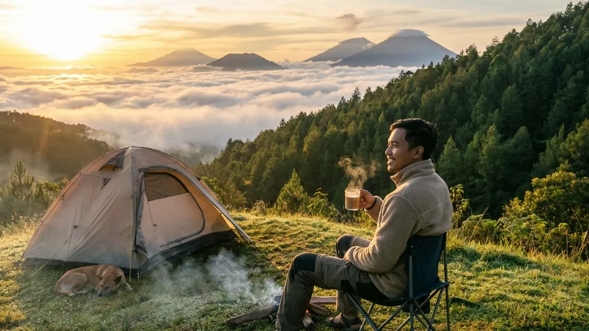

Melarikan diri dari kebisingan kota, kemacetan lalu lintas, dan tekanan pekerjaan yang menumpuk adalah kebutuhan fundamental bagi kelangsungan kesehatan mental masyarakat modern. Menginap di *resort* atau hotel bintang lima mungkin sudah terasa amat biasa. Itulah sebabnya, tren pariwisata kembali bergeser secara masif menuju aktivitas luar ruang, dengan penekanan pada keasrian alam tanpa harus kehilangan kenyamanan. Ketika Anda mencari informasi tentang Tempat Camping Terbaik di Batu: Rekomendasi Spot Sunrise Terbaik Camping Batu yang Menawan, Anda sejatinya sedang mengincar pengalaman *healing* tingkat tinggi yang hanya bisa ditawarkan oleh alam pegunungan Kota Apel ini.
Kota Batu tidak pernah gagal menyihir wisatawan melalui pesona visualnya. Dari sekian banyak atraksi alam yang ada, momen menyingsingnya fajar (sunrise) yang memecah dinginnya lautan kabut selalu menjadi komoditas visual paling berharga dan diburu oleh ribuan pengunjung setiap akhir pekannya. Artikel yang sangat komprehensif ini akan menguliti secara mendalam kriteria pemilihan spot perkemahan yang sempurna, merekomendasikan lokasi VIP yang paling menjanjikan, hingga membahas persiapan teknis yang wajib Anda lakukan agar tidak menggigil kedinginan saat menunggu datangnya cahaya matahari terbit yang spektakuler tersebut.
1. Mengapa Memburu Sunrise di Kota Batu Menjadi Aktivitas Wajib?
Matahari memang terbit di seluruh belahan bumi, namun menyaksikannya perlahan naik dari atas ketinggian Kota Batu akan memberikan pengalaman emosional yang sulit diungkapkan oleh kata-kata.
Fenomena Lautan Awan (Sea of Clouds) di Pagi Hari
Secara geografis, wilayah Kota Batu dikelilingi layaknya benteng oleh jajaran pegunungan raksasa seperti Gunung Arjuno, Gunung Welirang, dan Gunung Panderman. Elevasi lahan perkemahan rata-rata berada pada ketinggian 1.000 hingga lebih dari 1.500 meter di atas permukaan laut (MDPL). Pada ketinggian inilah fenomena Inversi Suhu kerap terjadi secara dramatis di pagi buta. Udara dingin yang terperangkap di lembah membentuk lapisan kabut putih super tebal yang menyerupai lautan awan (Sea of Clouds). Ketika piringan matahari mulai muncul perlahan dari ufuk timur, sinarnya akan memantul dan membias pada awan tersebut, melahirkan gradasi warna ungu, merah muda, hingga kuning menyala (Golden Hour) yang luar biasa menawan.
Suhu Udara Pegunungan yang Menyegarkan dan Menyehatkan
Lebih dari sekadar objek pemanja mata dan lensa kamera, menghirup udara fajar di alam bebas memberikan dampak psikologis dan fisiologis yang sangat nyata. Hembusan udara pegunungan pagi sangat kaya akan oksigen murni serta terbebas dari emisi karbon. Menyambut kehangatan mentari pagi yang mengenai permukaan kulit secara perlahan terbukti medis mampu menekan produksi hormon kortisol (pemicu stres) dan merangsang pelepasan hormon endorfin dan serotonin. Ini adalah metode terapi relaksasi paling organik bagi Anda dan keluarga tercinta.
BACA JUGA (Eksplorasi Keindahan Alam):
2. Kriteria Memilih Tempat Camping Terbaik di Batu
Mendapatkan pemandangan fajar yang sempurna membutuhkan kalkulasi yang presisi. Tidak semua hamparan tanah berumput hijau layak dijadikan sebagai spot berburu *sunrise*. Berikut adalah kriteria wajib yang harus Anda cek sebelum melakukan pemesanan lokasi.
Orientasi Lahan Wajib Menghadap Timur
Ini adalah syarat mutlak yang tidak bisa ditawar. Matahari terbit dari arah timur. Sebuah *camping ground* yang posisinya berada di lereng sebelah barat sebuah gunung, atau secara tata ruang terhalang oleh dinding tebing maupun pepohonan super rapat di sisi timurnya, dipastikan tidak akan pernah bisa menyajikan pemandangan sunrise yang utuh. Pastikan Anda meriset melalui foto, peta, atau ulasan bahwa lapangan tempat tenda didirikan berbentuk terasering terbuka yang langsung menghadap hamparan lembah timur.
Fasilitas Lengkap dan Keamanan Terjamin (Anti-Ribet)
Keindahan alam akan terasa percuma jika tubuh Anda menderita. Tempat perkemahan yang baik harus masuk ke dalam kategori Comfort Camping. Ini berarti tempat tersebut wajib memiliki fasilitas MCK (kamar mandi) permanen dengan toilet kloset duduk (flushing) yang sangat terjaga kebersihannya, suplai air bersih tanpa henti, serta akses tiang colokan listrik yang aman di dekat tenda. Selain itu, area tersebut juga harus bisa diakses dengan mudah oleh kendaraan roda empat biasa (mobil MPV keluarga) agar barang bawaan Anda tidak perlu dipanggul melintasi jalur *trekking* yang jauh dan menguras peluh.

Penataan posisi tenda yang tepat dan mengarah lurus ke timur akan menjamin Anda mendapatkan sudut pandang visual (view) maksimal saat pagi hari menjelang. (Dokumentasi: Batu Sunrise Camp)3. Rekomendasi Spot Sunrise Terbaik Camping Batu yang Menawan
Untuk menjawab kehausan Anda akan pencarian Tempat Camping Terbaik di Batu: Rekomendasi Spot Sunrise Terbaik Camping Batu yang Menawan, kami telah menyusun daftar destinasi premium yang akan memanjakan momen liburan Anda sepenuhnya.
Batu Sunrise Camp (Rekomendasi Utama VIP)
Menduduki puncak klasemen dari seluruh daftar pencarian ini adalah Batu Sunrise Camp. Nama yang tersemat padanya bukanlah sekadar hiasan marketing, melainkan representasi keakuratan geografis yang amat presisi. Spot perkemahan eksklusif ini didesain secara spesifik dengan orientasi lahan terasering yang menghadap langsung ke arah hamparan langit timur. Anda bahkan tidak perlu membuka sepatu atau mendaki bukit di subuh hari; cukup dengan menarik ritsleting pintu depan tenda, Anda bisa langsung menikmati mahakarya Golden Sunrise yang menyingsing gagah dari balik Gunung Arjuno, memecah lautan awan yang menutupi Kota Malang.
Lebih dari sekadar menawarkan *view* yang spektakuler, Batu Sunrise Camp amat terkenal karena pelayanan All-In Package (Paket Terima Beres). Tamu akan tidur di dalam tenda spesifikasi gunung bertipe double layer tebal, beralaskan matras empuk, dan dibungkus sleeping bag hangat. Fasilitas sanitasi di sini merupakan percontohan *camping ground* bintang lima, dengan deretan toilet bilas yang bersih wangi, keamanan berpatroli 24 jam, hingga instalasi colokan listrik yang menunjang Anda merekam *time-lapse sunrise* tanpa perlu khawatir kehabisan daya ponsel.
Kawasan Puncak Brakseng (Sensasi Ekstrem)
Sebagai opsi pembanding bagi jiwa yang lebih ekstrem, kawasan Puncak Brakseng menyajikan elevasi yang teramat tinggi. Karena kawasannya yang berupa hamparan perbukitan sabana dan lahan perkebunan, spot ini mampu menyajikan pandangan cakrawala yang amat amat luas. Tentu saja, matahari terbit dari sini terlihat sangat dramatis. Namun tantangannya cukup berat: paparan angin gunung bertiup jauh lebih kencang, dan suhu udara akan terasa sangat ekstrem menusuk tulang, sehingga menuntut perlengkapan survival pribadi yang amat tangguh.
Bukit Bintang Batu (Pilihan Alternatif)
Pilihan alternatif ketiga adalah kawasan di sekitar Bukit Bintang atau perbukitan Paralayang. Walaupun titik jual utamanya adalah melihat hamparan lampu kota (city lights) di malam hari, bukit ini tetap mampu memberikan sudut kemiringan yang pas saat fajar menampakkan diri. Kawasan ini sering dipadati oleh pengunjung usia muda yang hanya bermodal kendaraan roda dua (*motocamp*) dan menyeduh kopi instan menyambut pagi.
BACA JUGA (Panduan Kenyamanan Tenda):
4. Persiapan Menikmati Sunrise Pegunungan yang Menawan
Waktu yang paling krusial untuk menyaksikan *sunrise* terjadi antara rentang pukul 05:15 hingga 05:45 WIB. Waktu inilah yang secara klimatologi menjadi titik dengan suhu paling beku dalam siklus satu hari (fenomena *bediding*). Persiapkan diri Anda dengan matang melalui dua aspek di bawah ini.
Pakaian Berlapis (Layering System) Penghalau Hawa Dingin
Meskipun Anda hanya duduk manis di depan tenda, paparan udara subuh sangatlah berisiko bagi kesehatan. Jangan sesekali menggunakan jaket katun biasa. Anda wajib mengaplikasikan 3-Layering System. Lapis terdalam (base layer) harus berbahan dry-fit/kaos olahraga agar tubuh tetap kering. Lapis tengah (mid layer) gunakan jaket polar (fleece) tebal yang berguna mengunci sirkulasi panas dari suhu tubuh Anda. Lapis pelindung terluar (outer) gunakanlah jaket windbreaker atau parasut tebal penahan tiupan angin tajam. Lindungi juga daun telinga Anda menggunakan beanie hat (kupluk rajut), serta kenakan sepasang sarung tangan dan kaus kaki ekstra.
Gear Fotografi Dasar dan Persiapan Minuman Hangat
Untuk mengabadikan siluet menawan dan pendaran cahaya keemasan (Ray of Light) tanpa hasil yang goyang (*blur*), penggunaan Tripod mini untuk smartphone Anda sangatlah diwajibkan. Turunkan nilai *exposure* pada layar Anda perlahan agar warna fajar tidak pecah (*overexposed*). Selain itu, persiapkanlah kompor gas portabel Anda segera setelah Anda bangun tidur. Merebus air dan menyeduh secangkir kopi arabika murni, teh serai, atau cokelat panas adalah ritual *healing* yang akan menyempurnakan rasa syukur Anda saat menyambut hari yang benar-benar baru.
5. Kesimpulan
Kemewahan absolut dari sebuah liburan perkemahan terletak pada kemampuan sebuah destinasi menyajikan pemandangan alam yang tak terlupakan dan menggugah emosi. Dalam pencarian Tempat Camping Terbaik di Batu: Rekomendasi Spot Sunrise Terbaik Camping Batu yang Menawan, Anda tentu tidak ingin mengorbankan waktu akhir pekan untuk pemandangan yang biasa-biasa saja. Memilih *camping ground* yang orientasi pemandangannya menghadap secara presisi ke timur seperti Batu Sunrise Camp adalah strategi anti-gagal yang amat cerdas. Ditambah dengan kehadiran fasilitas kelas wahid berupa sanitasi prima, tenda anti-embun, serta colokan kelistrikan yang dapat diandalkan, perburuan *Golden Sunrise* Anda dan keluarga dijamin tidak akan pernah diliputi oleh bayang-bayang kedinginan atau kerepotan. Kemaslah pakaian penahan angin Anda segera, atur napas, dan bersiaplah membiarkan keajaiban fajar Kota Batu mengkalibrasi ulang seluruh jiwa dan raga Anda!